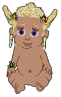
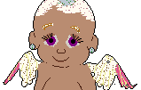
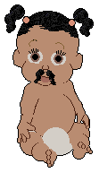
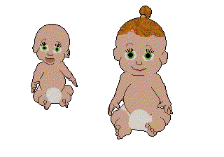
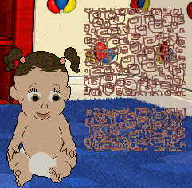
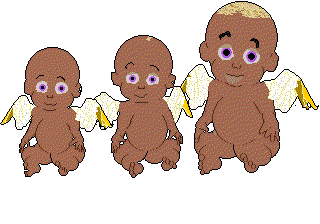

Fix 'n' Ref... Easy Babyz... Edit Info... Easy Scenes... Toyz/Clo... Babyfile edit...
Go to my Main tutorial
page
for general stuff and colour charts, Resource Hacker tips, LNZ Pro 2 tips
etc
Go to my LNZ breakdown chunks
for some very useful information on the LNZ files which make up the core of
your new baby.
Go here for info on Nicholas' Babyza,
Tinker, and LNZPro 2
Not created by me, obviously -- but I've helped with
information and files, and I feel very protective of Nicholas. He's a
National Treasure :-)
NOTE My tutorials mostly tell you how to edit in the days before Nicholas' tools were created for us all. I keep the tutorials and howtos here anyway because they are still useful. But wherever you see mention of Notepad, you can use the same info when editing the LNZ or CLZ section in LNZPro. And my LNZ info chunks are still invaluable.
The special hexer baby
-- thanks, L41N!
This is L41N's brilliant idea. She sent me a hexer baby which I tidied up
and added to with extra comments, a how-to page etc.
Go here for Sphinx's Special
tools
Also not created by me, obviously :-) but Sphinx has
generously offered them to the BC and, since I have fond memories of her
jabbing, poking and encouraging me until I made many of my Babyz
discoveries, I am very happy to have something of hers here.
IMPORTANT NOTE:
Some files that we hexers want to edit are .DLL files, such as the large
BabyzRez.dll. Windows, by default, has files of this type "hidden" --
presumably as some kind of safety feature, but in our case we need to see
them. So if you cannot see them on your machine, open My Computer or Windows
Explorer, choose View and Options, and then under View make sure that "Show
all files" is ticked. While you're about it, un-tick "Hide MS-DOS file
extensions", because that's a nuisance too.
Babyz fixes, and Reference
items
~~~~~~~~~~~~~~~~~~~~~~~~~~~~~~~~~~~
ViaVoice fix
Sound fixed files for Windows XP
Now that Nicholas has made Petza fix the sound problem while the game is
running, you don't really need this soundfix. But I'm leaving it up for
anyone who cannot get petza to work for them or wants alternative files for
the "fooler". I have the link to Nicholas' site on my "Nicholas' Tools"
page.
Modified Exe for Playpen access
This is my ongoing testbed .exe file. My hope is that I
will eventually be able to get the game to accept more playscenes, by
avoiding the need to use the house icon. As yet in my game I have not
been able to get it to work for the Attic and Nursery, so have not got as
far as further scenes. I'm producing it for you in case you can do better
with it. It does have one feature that you might enjoy; the Playpen and
Desktop "scenes" are both usable. It overwrites your original, so please
please make sure you put yours somewhere safe before trying mine.
My Colour Chart for Babyz hexing
How to fix problems with Babyz freezing
or crashing
Brain-sliders for your Babyz' health
and happiness
Babyz Ballz list
Backup copy of un-edited BabyzRez.dll
For people who don't use my easy-edit package to create
new babyz. If you've messed the thing up in Resource Hacker or a hex
editor and don't want to have to re-install, then this is the download
for you.
A fix for when that annoying CD message pops
up
...and you don't want to either have to keep putting
the CD in the drive or re-setting the game back to its defaults.
Babyz Demo
Fooler.
A partial solution for people who cannot buy the
game anywhere; this fools the demo into giving you better play.
And for people who have lost their CD and cannot find another anywhere, here is a page where you can find a backup ISO image of the complete game and an installation fix. The game is zipped of course, so you would need to unzip it and either burn it to a CD or mount it with image-mounting software. If you don't know what that means, just burn it to a CD.
And, if you're running Windows (blech) XP or (argh blech) Vista, I strongly advise you to get Nicholas' Petza/Babyza. You can get the link to his site via my "Nicholas' Tools" page.
Ultra-easy editing to create new
babyz
~~~~~~~~~~~~~~~~~~~~~~~~~~~~~~~~~~~~~~~
Ultra easy New-babyz editing "howto"
package
The Rez.dll plus .lnz from Ultra Easy
package
Only download the Rez.dll version if you either cannot
change the single byte yourself or the little patch from the "howto"
package doesn't work. The zipfile is 5.5 megabytes in size.
(Take a look also at my LNZ file
breakdown chunks here, they really
should be helpful.)
This is part of my "Ultra-easy" editing range; this package includes all
that you need in order to create new babyz easily, using only Notepad,
Wordpad and either Windows Explorer or My Computer! Woo-hoo! NOTE: You do
have to read the included text files carefully and follow the instructions,
or the method won't work for you. Click here
to see a screengrab of my Babyz directories in Windows Explorer, so
you can see where the .lnz files are supposed to go if you're confused.
The icon beside the .lnz files are Notepad ones because I used Windows
Explorer's View -> Options -> File Types menu item to Associate the .lnz
extension with Notepad.exe.
This next lot is for people who want to edit items such as the bubbles from
the bubble machine. You can only change those by editing them in the
BabyzRez.dll file, and all the in-game bubbles will be changed if you do --
bath bubbles etc. So if people want your bubbles they will have to download
the external-filmstrip files.
The Rez.dll prepared for external
filmstrips
This is a 5.5 megabyte download and is just the .dll file with two bytes
changed to make the game look for filmstrips externally. You can change the
bytes yourself instead if you wish, but whichever you choose, you absolutely
need to download the filmstrips.
The external filmstrips
This next one is a .dll which has been prepared to use external lnz as well
as external filmstrips. If you download it, make sure to download also the
external filmstrips zip which also contains the required external lnz. The Rez.dll prepared for
external filmstrips
{kind=link}
Ultra easy New-babyz
Egyptian-pharaoh eyes, bangs, single pigtail with bow
This is actually the complete .lnz for a baby, for use with my Ultra easy
New-babyz editing "howto".
Ultra easy New-babyz
Flowers, Long hair Etc
This is actually the complete .lnz for a baby, for use with my Ultra easy
New-babyz editing "howto", including instructions for customising it.

Ultra easy New-babyz Wingz

Various Information for making special new
babyz
~~~~~~~~~~~~~~~~~~~~~~~~~~~~~~~~~~~~~~~~~~~~~~~
This is for editing the .lnz files; my easy-edit kit along with
Notepad.exe is how I used to make new babyz, and I recommend it to you.
Nowadays I also use the ever-more-fantastic LNZPro, either with my easy-edit
kits or simply to rehex one of my existing babyz.
Here's a special hexer baby for
you to use with LNZPro -- thanks, L41N, for the great idea and the base
baby! This method is also highly recommended.
As I say above, please also take a look at my LNZ file breakdown chunks here, they really should help you
understand the .lnz files.
How to hex a babyz that's
permanently skinny (or fat)
How to use Polygons in Babyz
hexing
How to add stuff from clothing items
to your babyz

How to use Linez in Babyz
hexing
Making new babyz
How to "enable" the original
teeth
Creating Preemie babyz
Moving Add Ballz around
x, y, z positions -- how to figure it out
changing textures in Babyz, also
kiss-marks
Hexing Babyz Hair,
Eyelashes, and growth
Updated August 2003. This time not on .baby files (see
below, "Various Information for Editing adopted .Baby files", for info on
making already-adopted babyz grow). This is for people who want to adopt
babyz that will grow without alteration. Includes some info on changing
body colours. Also includes example babyz and .lnz sections.

Making a Baby
or Pet with missing limbs.
and before anyone sends me hate-mail for this one,
please read the readme. This tutorial is intended as a service for people
who need to relate to virtual playmates who do not have the "body
perfect".
Hair FAQs
My Playscene Easy-edit Kits
~~~~~~~~~~~~~~~~~~~~~~~~~~~~~~~~~~~~
NOTE: Since I made these, Nicholas has made the Tinker and LNZPro 2
programmes. You can download them via my Nicholas Tools page, and for info
on how to use them for this purpose click here
Specifically on making playscenes show up separately using LNZPro, click here.
A kit for making new kitchen
Playscenes
part of my "Ultra-easy" editing range. This particular
one has the filmstrips separated out, but I have not had time to put the
bitmap headers on them for you.
A kit for making new Clothes Closet
Playscenes
part of my "Ultra-easy" editing range. This particular
one has the filmstrips separated out, but I have not had time to put the
bitmap headers on them for you.
A kit for making new Family Room
Playscenes
part of my "Ultra-easy" editing range.
An easy-edit kit for making new Attic
Playscenes
part of my "Ultra-easy" editing range.
An easy-edit kit for making new Back Yard
Playscenes
part of my "Ultra-easy" editing range.
An easy-edit kit for making new Playroom
Playscenes
part of my "Ultra-easy" editing range.
A kit for making new nursery
Playscenes
part of my "Ultra-easy" editing range; this package
includes the playscene and a load of external files which you do need to
put in the correct places before the game will accept it. Please read the
included info carefully. Note that if you want the window area to look
right, you'll need to either change the background in the affected area
or you'll need to edit the window filmstrips. If you want my Secret Wood Playscene, you'll need
to install this "change your nursery" kit first. Click here to see a screengrab of
my Babyz directories in Windows Explorer, so you can see where the Nursery's
external files are supposed to go if you're confused.
If you're having trouble working out how to fix problems with the
background
being messed up in places, or you need help with
editing the filmstrips, download this file also -- it is
specific to Nursery-based scenes, but with any luck it'll help you to
understand how to deal with others too.
{kind=link}
Changing your
Babyz "secret" Playpen background
Note that this tells you to edit your game's main .exe file. It also gives a
hint that you can edit other graphics within the .exe.
For people who have a later version of the game than mine, you may prefer to
use:
this simpler
method for changing the playpen background.
Works with later versions of the game than mine. If this doesn't work for
you, either get a later version of the Babyz.exe -- my "modified" one, for
instance, or there may be one available at Daniel Wright's The
Babyz Crib -- or check out my "howto" above on editing the .exe.
Filmstrip editing, Toyz, Toychests, and
Clothes
~~~~~~~~~~~~~~~~~~~~~~~~~~~~~~~
NOTE: Since I made the easy-edit kits, Nicholas has made the Tinker and LNZPro 2 programmes. You can download them via my Nicholas Tools page, and for info on how to use them for this purpose click here
Extra help; making your
own crackers come out of the box
The Carrot bag mentioned in the cracker-box
tut
Extra help on non-overwriting
clothes etc
Changing the jar and bowl food-blob
colour on the spoon
Easy-edit kit for making your own Sippy
cups
A kit for making your own "Red"
Toychests
Everything is here for your easy-editing pleasure,
except that I've not put the bitmap headers on the chopped filmstrips. I
thought I'd leave that bit of fun for you... actually I had no time to do
it :-)
A kit for making your own Hippo
Toychests
Everything is here for your easy-editing pleasure,
except that I've not put the bitmap headers on the chopped filmstrips. I
thought I'd leave that bit of fun for you... actually I had no time to do
it :-)
A kit for making your own
Toychests
This is an external-filmstrip easy-edit package. Those
who are keen to learn more about filmstrip editing may also wish to
download this second
zipfile with its split-filmstrip and howto, but those who just
want as much done for them as possible will wish to download this third zipfile with
ready-prepared bitmaps instead of the second zipfile.
My Gunk Toychest

Think it's pretty dreadful?? Well, consider yourselves
lucky that I didn't drive you potty with my "gone" toychest *cackles
crazily*
A kit for making your own kiddie
pools
This is a set of filmstrips for you to edit and
instructions for re-inserting them into the bathtub toy.
Un-hiding and
giving shelf graphics to difficult toyz
This includes the petz games, but there is very
important info for Babyz. It shows how you can use your hex editor to
make "hidden" toyz show up properly on shelves in all the games.
Editing Babyz Filmstrips (advanced)
Toyz editing, clothes showing up separately, etc, for
Babyz.
Simple filmstrip editing
hex-painting (colouring) for toyz, clothes on shelf,
etc. Applies to all the games including Babyz.
Hexing babyz clothes
Position of clothes etc on
shelves
People who get puzzled as to how the game knows where
to put clothing items etc, and how to fit their own in where they wish,
this is for you.
Making Hidden and special-place
toyz
This one shows how easy it is to make your own "hidden"
toyz and make them appear in very special places, such as the floor of
any chosen scene or the fridge etc. Click here for my example Icecup toy; if
you follow the installation instructions, the toy should show up only in
the freezer compartment.
Changing "Pointers" in
files
For people who get puzzled about why clothes or toyz
don't look right on the shelves after filmstrips etc have been
changed.
Various Information for Editing adopted .Baby files
~~~~~~~~~~~~~~~~~~~~~~~~~~~~~~~~~~~~~~~~~
Here's a special hexer baby
for you to use with LNZPro -- thanks, L41N, for the great idea and the base
baby!
If you download this baby and study how to edit it in
LNZPro, once you're used to that you should be able to rehex any of your
own babyz in the same way. This is not intended as a method for thieves
to steal code, and you can be assured that the BC will notice if you do that
:-)
Apart from the "basic" tutorial, the following "howto"s tend to assume that you already know how to edit .baby files. Some of them are also relevant to editing pet files, but don't let that confuse you. The methods are the same. Unless you are using LNZPro (recommended to you since the wonderful version 3!), you need to edit in a hex editor and compensate for the checksum.
Basic .baby and .pet
file editing
How make your baby
permanently skinny (or fat)
Put "eyeshadow" on your
already-adopted babyz
You can now make changes to your babyz' eyelids that
will actually work.
Turning your babyz into
Walkers
A rare fixable corruption in a pet or
babyz
Eyelids -- adding or subtracting
digits
Editing without a Paint Ballz
section
Eye colour -- how?
More Pet and Baby file
editing
Putting bellybuttons on Babyz, and how to increase a
pet's eye colour to a greater-digit number or decrease it to a
lesser-digit number. Includes example babyz and petz.

How to make
your adopted Babyz grow, also its hair
Includes example baby.
Note that, if you want the hair etc to grow out from the head as the baby
grows rather than appearing as spots in the air around the baby at first,
read this [Add Ball] snippet of
info.

More Advanced Pet
And Baby Files Editing (Updated 20 June 2003)
Includes examples
Advanced Pet And Baby File
Editing (Jan 2003)
Online Player files.
~~~~~~~~~~~~~~~~~~~~
Making babyz Player files to put up at your website
.